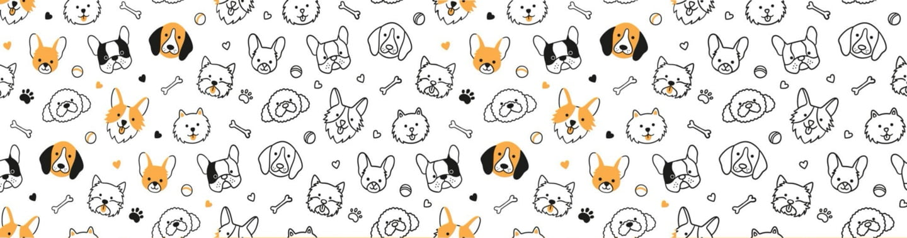

This project explores New Zealand’s love for cats and dogs through an interactive web-based visualisation.
We aim to reveal not just ownership trends, but also how companion animals shape people’s lifestyles, communities, and daily choices.
The visualisation moves from macro to micro, starting with national ownership rates and geographic differences, and drilling down to pet acquisition methods, ownership motivations, income patterns, and barriers faced by future pet owners.
Our primary dataset is the Companion Animals New Zealand Pet Data Report 2024, based on a national survey conducted by Companion Animals NZ.